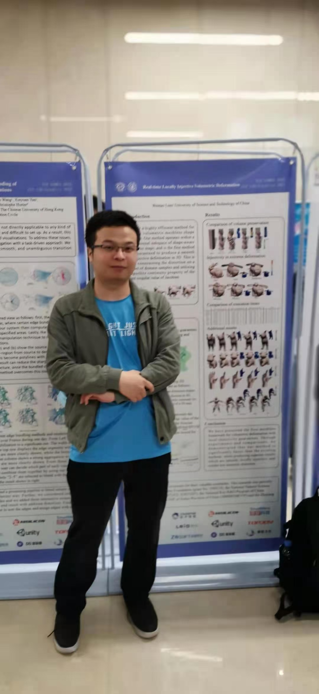

|  |
Wentao Liao （廖文韬）
|

|
Real-time Locally Injective Volumetric Deformation
Wentao Liao, Renjie Chen, Yuchen Hua, Ligang Liu, Ofir Weber, ACM Transactions on Graphics (Proc. SIGGRAPH), 40(4):Article 74, 2021. [Project page] |